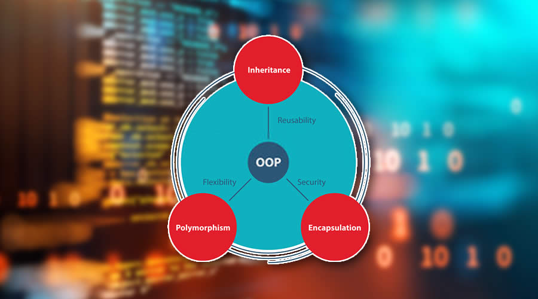

Εισαγωγή στον Αντικειμενοστραφή Προγραμματισμό

Γενικές πληροφορίες
Όπως υποδηλώνει το όνομα,
ο Αντικειμενοστραφής Προγραμματισμός (OOP)
αναφέρεται σε γλώσσες που χρησιμοποιούν
αντικείμενα στον προγραμματισμό.
Ο αντικειμενοστραφής προγραμματισμός στοχεύει στην εφαρμογή
πραγματικών οντοτήτων όπως η κληρονομικότητα, η απόκρυψη,
ο πολυμορφισμός κ.λπ. στον προγραμματισμό.
Ο κύριος στόχος του Αντικειμενοστραφή Προγραμματισμού
είναι να συνδέσει τα δεδομένα και τις συναρτήσεις που
λειτουργούν σε αυτά,
έτσι ώστε κανένα άλλο μέρος του κώδικα να μην μπορεί
να έχει πρόσβαση σε αυτά τα δεδομένα εκτός
από αυτήν τη συνάρτηση.
Στον ακόλουθο σύνδεσμο
μπορείτε να βρείτε περισσότερες πληροφορίες.
Δομή μαθήματος
Το μάθημα οργανώνεται στα εξής κεφάλαια με την σειρά
που αναγράφονται
- Κλάσεις
- Αντικείμενα
- Απόκρυψη πληροφοριών
- Ενθυλάκωση
- Κληρονομιμκότητα
- Πολυμορφισμός
Το κόστος των μαθημάτων ανέρχεται στα 500$ εκ των οποίων τα 150$
πρέπει να δωθούν ως εγγύηση κατά την πραγματοποίηση της εγγραφής.
Προγραμματισμός με Java

Ιστορία
Στις αρχές του 1991, η Sun αναζητούσε το κατάλληλο
εργαλείο για να αποτελέσει την πλατφόρμα ανάπτυξης λογισμικού
σε μικρο-συσκευές (έξυπνες οικιακές συσκευές έως πολύπλοκα
συστήματα παραγωγής γραφικών). Τα εργαλεία της εποχής ήταν
γλώσσες όπως η C++ και η C. Μετά από διάφορους πειραματισμούς
προέκυψε το συμπέρασμα ότι οι υπάρχουσες γλώσσες δεν μπορούσαν
να καλύψουν τις ανάγκες τους. Ο "πατέρας" της Java,
James Gosling, που εργαζόταν εκείνη την εποχή για την Sun,
έκανε ήδη πειραματισμούς πάνω στη C++ και είχε παρουσιάσει
κατά καιρούς κάποιες πειραματικές γλώσσες (C++ ++),
που μετέπειτα ονομάστηκε C# ) ως πρότυπα για το νέο εργαλείο
που αναζητούσαν στην Sun. Τελικά μετά από λίγο καιρό κατέληξαν
με μια πρόταση για το επιτελείο της εταιρίας, η οποία ήταν η
γλώσσα Oak. Το όνομά της το πήρε από το ομώνυμο δένδρο(βελανιδιά)
το οποίο ο Gosling είχε έξω από το γραφείο του και έβλεπε κάθε
μέρα.
Από την Oak στην Java
Η Oak ήταν μία γλώσσα που διατηρούσε μεγάλη συγγένεια με την
C++. Παρόλα αυτά είχε πολύ πιο έντονο αντικειμενοστρεφή
(object oriented) χαρακτήρα σε σχέση με την C++ και
χαρακτηριζόταν για την απλότητα της. Σύντομα οι υπεύθυνοι
ανάπτυξης της νέας γλώσσας ανακάλυψαν ότι το όνομα Oak ήταν
ήδη κατοχυρωμένο οπότε κατά την διάρκεια μιας εκ των πολλών
συναντήσεων σε κάποιο τοπικό καφέ αποφάσισαν να μετονομάσουν
το νέο τους δημιούργημα σε Java που εκτός των άλλων ήταν το
όνομα της αγαπημένης ποικιλίας καφέ για τους δημιουργούς της.
Η επίσημη εμφάνιση της Java αλλά και του HotJava
(πλοηγός με υποστήριξη Java) στη βιομηχανία της πληροφορικής
έγινε το Μάρτιο του 1995 όταν η Sun την ανακοίνωσε στο συνέδριο
Sun World 1995.
Πηγή: Βικιπέδια
Δομή μαθήματος
Το μάθημα "Προγραμματισμός με Java"
οργανώνεται ως εξής:
- Εισαγωγή στην Java
- Τα βασικά του προγραμματισμού
- Εργασία με Αντικείμενα
- Λίστες και Βρόγχοι
- Δημιουργία Κλάσεων και Μεθόδων
- Πακέτα και Περιβάλλοντα
- Εξαιρέσεις και Νήματα
Το κόστος των μαθημάτων ανέρχεται στα 500$, εκ των οποίων
τα 150$ πρέπει να δωθούν ως εγγύηση κατά
την πραγματοποίηση της εγγραφής.
Προγραμματισμός με C++

Ιστορία
Η γλώσσα προγραμματισμού C++
έχει ιστορία από το 1979,
όταν ο Bjarne Stroustrup δούλευε για το διδακτορικό του.
Μία από τις γλώσσες με τις οποίες ο Stroustrup είχε την
ευκαιρία να εργαστεί ήταν μια γλώσσα που ονομάζεται Simula,
η οποία όπως υποδηλώνει το όνομα είναι μια γλώσσα που έχει
σχεδιαστεί κυρίως για προσομοιώσεις.
Λίγο αργότερα, άρχισε να εργάζεται στη "C with Classes",
η οποία όπως υπονοεί το όνομα της προοριζόταν να είναι ένα
υπερσύνολο της γλώσσας C.
Στόχος του ήταν να προσθέσει αντικειμενοστραφή προγραμματισμό
στη γλώσσα C, η οποία ήταν και εξακολουθεί να είναι μια γλώσσα
σεβαστή για τη φορητότητά της χωρίς να θυσιάζει την ταχύτητα
ή τη λειτουργικότητα χαμηλού επιπέδου.
Η γλώσσα του περιελάμβανε τάξεις, βασική κληρονομικότητα,
ενσωμάτωση, ορίσματα προεπιλεγμένων συναρτήσεων και ισχυρό
έλεγχο τύπων, πέρα από όλα τα χαρακτηριστικά της γλώσσας C.
Το 1983, το όνομα της γλώσσας άλλαξε από C με Τάξεις σε C++.
Ο τελεστής ++ στη γλώσσα C είναι ένας τελεστής για την αύξηση
μιας μεταβλητής, ο οποίος δίνει κάποια εικόνα για το πώς ο
Stroustrup αντιμετώπιζε τη γλώσσα. Πολλές νέες δυνατότητες
προστέθηκαν περίπου αυτήν την περίοδο.
Δομή μαθήματος
Το μάθημα "Προγραμματισμός με C++" ακολουθεί την δομή του βιβλίου
"Μάθετε την C++ από το μηδέν", το οποίο μπορείτε να βρείτε σε ψηφιακή μορφή
εδώ.
Το μάθημα οργανώνεται στα εξής κεφάλαια:
- Η ιστορία της C++
- Μια επισκόπηση της C++
- Βασικοί τύποι δεδομένων
- Εντολές ελέγχου προγράμματος
- Πίνακες και αλφαριθμητικά
- Δείκτες
- Συναρτήσεις
- Δομές και ενώσεις
Το κόστος των μαθημάτων ανέρχεται στα 500$, εκ των οποίων
τα 150$ πρέπει να δωθούν ως εγγύηση κατά
την πραγματοποίηση της εγγραφής.
Προγραμματισμός με Python

Περιγραφή
Η Python είναι μια εύκολη στην εκμάθηση,
ισχυρή γλώσσα προγραμματισμού. Διαθέτει
αποτελεσματικές δομές δεδομένων υψηλού
επιπέδου και μια απλή αλλά αποτελεσματική
προσέγγιση στον αντικειμενοστραφή
προγραμματισμό. Η κομψή σύνταξη και η
δυναμική πληκτρολόγηση της Python,
σε συνδυασμό με την ερμηνευτική φύση της,
την καθιστούν ιδανική γλώσσα για scripting
και γρήγορη ανάπτυξη εφαρμογών σε πολλούς
τομείς στις περισσότερες πλατφόρμες.
Ο διερμηνέας της Python και η εκτεταμένη
τυπική βιβλιοθήκη είναι ελεύθερα διαθέσιμα
σε πηγή ή δυαδική μορφή για όλες τις μεγάλες
πλατφόρμες από τον ιστότοπο της
Python,
και μπορούν να διανεμηθούν ελεύθερα.
Ο ίδιος ιστότοπος περιέχει επίσης διανομές και δείκτες
σε πολλές δωρεάν λειτουργικές μονάδες Python τρίτων,
προγράμματα και εργαλεία, καθώς και πρόσθετη τεκμηρίωση.
Δομή μαθήματος
Το μάθημα "Προγραμματισμός με Python"
οργανώνεται στα εξής κεφάλαια:
- Εισαγωγή στην Python
- Βασικά αντικείμενα, μεταβλητές, είσοδος και έξοδος
- Δομές ελέγχου ροής
- Συναρτήσεις
- Επεξεργασία Δεδομένων
- Αντικειμενοστραφής Προγραμματισμός
- Γραφική Διεπαφή Χρήστη
Το κόστος των μαθημάτων ανέρχεται στα 500$, εκ των οποίων
τα 150$ πρέπει να δωθούν ως εγγύηση κατά
την πραγματοποίηση της εγγραφής.
Προγραμματισμός για το Web
Τι είναι ο προγραμματισμός Ιστού
Η ανάπτυξη Ιστού είναι η εργασία που απαιτείται για την ανάπτυξη
μιας τοποθεσίας Web για το Διαδίκτυο(World Wide Web) ή ενός
intranet (ένα ιδιωτικό δίκτυο). Η ανάπτυξη Ιστού μπορεί να
κυμαίνεται από την ανάπτυξη μιας απλής στατικής σελίδας απλού
κειμένου έως πολύπλοκες εφαρμογές Ιστού, ηλεκτρονικές
επιχειρήσεις και υπηρεσίες κοινωνικών δικτύων.
Μια πιο ολοκληρωμένη λίστα εργασιών στις οποίες συνήθως
αναφέρεται η ανάπτυξη Ιστού, μπορεί να περιλαμβάνει
μηχανική Ιστού, σχεδιασμό Ιστού, ανάπτυξη περιεχομένου Ιστού,
σύνδεση με πελάτη, δέσμες ενεργειών από την πλευρά του
πελάτη/διακομιστή, διαμόρφωση ασφάλειας διακομιστή Web και
δικτύου και ανάπτυξη ηλεκτρονικού εμπορίου. Για την ανάπτυξη
μιας ολοκληρωμένης
εφαρμογής Ιστού απαιτούνται πολλά στάδια. Μια σύντομη, πλην όμως
ολοκληρωμένη περιγραφή μπόρείτε να βρείτε εδώ.
Δομή μαθήματος
Το μάθημα "Προγραμματισμός για το Web "
οργανώνεται ως εξής:
- Πώς λειτουργεί το Web
- Εισαγωγή στην HTML
- Εισαγωγή στα CSS
- Πίνακες και φόρμες HTML
- CSS για προχωρημένους: Διάταξη
- JavaScript: Δέσμες ενεργειών για την πλευρά του πελάτη
- Τα πολυμέσα του Web
Το κόστος των μαθημάτων ανέρχεται στα 500$, εκ των οποίων
τα 150$ πρέπει να δωθούν ως εγγύηση κατά
την πραγματοποίηση της εγγραφής.